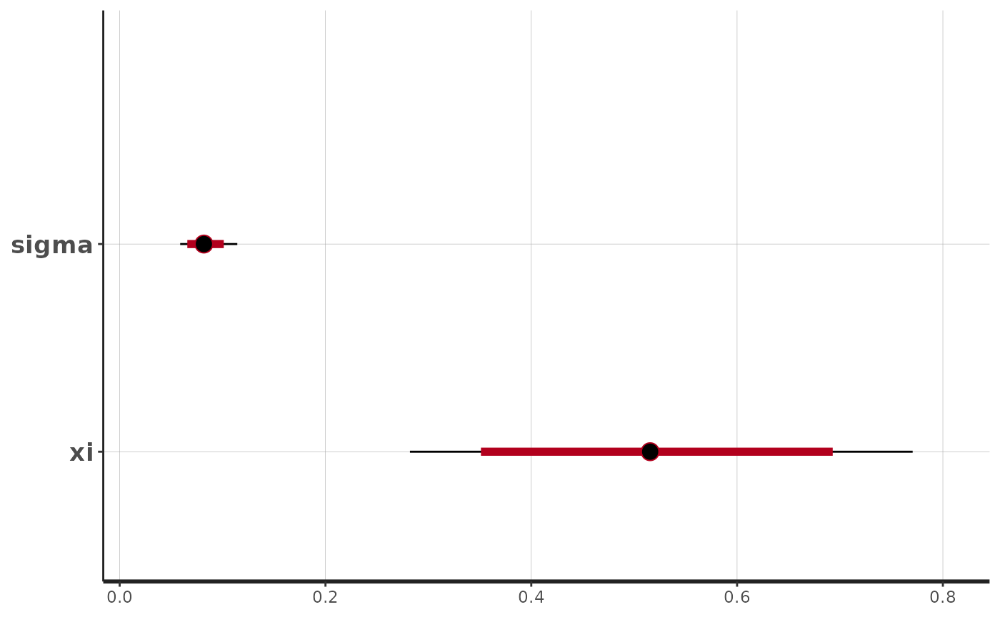

Bridge to R-INLA and Stan
Created: 2023-12-13. Last modified: 2024-07-14.
Source:vignettes/INLA_and_Stan_utilities.Rmd
INLA_and_Stan_utilities.RmdUsing univariate WCP prior in R-INLA
Our package allows user to provide WCP prior with a form that R-INLA software can use. Here we give an example with WCP prior for of stationary AR(1) processes. The model setup and theoretical details can be found at Section 3.1 from https://arxiv.org/pdf/2312.04481.pdf. We will generate the WCP prior by its analytic expression. Functions that encode analytic expression of WCP priors in our package have similar usage. For univariate prior, functions take a sequence of values of parameter of interests and for bivariate priors, functions take one pair of values of the two parameters. If users set the argument ‘inla_table’ to be TRUE, then the function will output the prior in the format that R-INLA can use.
We now load the R-INLA and WCPprior library.
We first simulate a stationary AR(1) process with length 10. We set the standard deviation and .
# length of the AR1 process
n = 10
# standard deviation of the process
sigma = 0.1
# value of phi
phi = 0.2
# simulate the process
sim_data = numeric(n)
sim_data[1] = rnorm(1,mean = 0, sd = sigma)
for (i in 2:n){
sim_data[i] = phi*sim_data[i-1] + rnorm(1, mean = 0, sd = sigma*sqrt(1-phi^2) )
}
data = data.frame(y = sim_data, t = 1:n)Now we are ready to setup the WCP prior of by using the function ‘WCP2_1D_AR1_analytic’ from WCPprior package. User should input a sequence of values of with information of , and .
# create a sequence of values of phi
seq_phi = seq(from = -1, to = 0.999, by = 0.001)
# call the function and set inla_table = TRUE so that the function will return a prior that can be used by INLA
WCP2_prior_table = WCP2_1D_AR1_analytic (seq_phi = seq_phi,
eta = 15,
n = 10,
sigma = sigma,
inla_table = TRUE)By setting ‘inla_table = TRUE’, the output of this function can be directly used by INLA for specifying prior in its formula.
formula = y~ -1+f(t,model='ar1',hyper = WCP2_prior_table)Then, we are ready to fit the model with the simulated process and WCP prior by INLA.
result = inla(formula=formula, data = data, family="Gaussian",
control.predictor = list(compute=T))
summary(result)## Time used:
## Pre = 0.384, Running = 0.163, Post = 0.0195, Total = 0.567
## Random effects:
## Name Model
## t AR1 model
##
## Model hyperparameters:
## mean sd 0.025quant 0.5quant
## Precision for the Gaussian observations 9.76e+01 40.60 38.582 9.08e+01
## Precision for t 2.18e+04 23499.98 1440.889 1.44e+04
## Rho for t 1.00e-03 0.70 -0.988 2.00e-03
## 0.975quant mode
## Precision for the Gaussian observations 1.95e+02 78.150
## Precision for t 8.42e+04 3929.066
## Rho for t 9.88e-01 0.998
##
## Marginal log-Likelihood: 2.19
## is computed
## Posterior summaries for the linear predictor and the fitted values are computed
## (Posterior marginals needs also 'control.compute=list(return.marginals.predictor=TRUE)')Finally, we visualize the result.

Using univariate WCP prior in stan
WCPprior package also provides format of univariate WCP priors that
can be used by stan. The implemented priors are: (1),
WCP
prior for
of stationary AR(1) process. (WCP2_1D_AR1_analytic)
(2),
WCP
prior for
,
the tail index, of generalized Pareto distribution.
(WCP1_1D_GPtail_analytic)
(3),
WCP
prior for precision parameter (reciprocal of variance) of Gaussian
distribution. (WCP2_1D_Gaussian_precision_analytic)
(4),
WCP
prior for mean parameter of Gaussian distribution.
(WCP2_1D_Gaussian_mean_analytic)
Here we show an example of using ‘WCP2_1D_AR1_analytic’ function in stan.
The first block in the stan file should be a function block that includes the implemented functions from WCPprior package.
The second block specifies data. That is an AR(1) process, y, with length .
The third block specifies parameter of interests, which is and its range is
The last block specifies model setup including log-likelihood of the process and log-likehood of the WCP prior. Here, the first argument of the function ‘WCP2_1D_AR1_analytic’ is length of the process, the second one is value of and the last one is value of (standard deviation of the process).
model {
for (n in 2:N)
y[n] ~ normal(phi * y[n-1], 0.1);
phi ~ WCP2_1D_AR1_analytic(N, 2.172101, 0.1);
}Let us now create the stan file and build the model. It
will be stored in the model object.
functions {
#include ../inst/stan/include/WCP_analytic.stan
}
data {
int<lower=0> N;
vector[N] y;
}
parameters {
real<lower = -1, upper = 1> phi;
}
model {
for (n in 2:N){
y[n] ~ normal(phi * y[n-1], 0.1);
}
phi ~ WCP2_1D_AR1_analytic(N, 2.172101, 0.1);
}Let us sample an AR1 process, where n is the length of
the process:
n = 100
sigma = 0.1
phi = 0.8
sim_data = numeric(n)
sim_data[1] = rnorm(1,mean = 0, sd = sigma)
for (i in 2:n){
sim_data[i] = phi*sim_data[i-1] + rnorm(1, mean = 0, sd = sigma*sqrt(1-phi^2) )
}
data <- list(N = 100L,
y = sim_data)We will now fit the model in stan. Observe that we are
calling the sampling function as we have the model as an
R object.
##
## SAMPLING FOR MODEL 'anon_model' NOW (CHAIN 1).
## Chain 1:
## Chain 1: Gradient evaluation took 3e-05 seconds
## Chain 1: 1000 transitions using 10 leapfrog steps per transition would take 0.3 seconds.
## Chain 1: Adjust your expectations accordingly!
## Chain 1:
## Chain 1:
## Chain 1: Iteration: 1 / 1000 [ 0%] (Warmup)
## Chain 1: Iteration: 100 / 1000 [ 10%] (Warmup)
## Chain 1: Iteration: 200 / 1000 [ 20%] (Warmup)
## Chain 1: Iteration: 300 / 1000 [ 30%] (Warmup)
## Chain 1: Iteration: 400 / 1000 [ 40%] (Warmup)
## Chain 1: Iteration: 500 / 1000 [ 50%] (Warmup)
## Chain 1: Iteration: 501 / 1000 [ 50%] (Sampling)
## Chain 1: Iteration: 600 / 1000 [ 60%] (Sampling)
## Chain 1: Iteration: 700 / 1000 [ 70%] (Sampling)
## Chain 1: Iteration: 800 / 1000 [ 80%] (Sampling)
## Chain 1: Iteration: 900 / 1000 [ 90%] (Sampling)
## Chain 1: Iteration: 1000 / 1000 [100%] (Sampling)
## Chain 1:
## Chain 1: Elapsed Time: 0.042 seconds (Warm-up)
## Chain 1: 0.029 seconds (Sampling)
## Chain 1: 0.071 seconds (Total)
## Chain 1:
##
## SAMPLING FOR MODEL 'anon_model' NOW (CHAIN 2).
## Chain 2:
## Chain 2: Gradient evaluation took 1.8e-05 seconds
## Chain 2: 1000 transitions using 10 leapfrog steps per transition would take 0.18 seconds.
## Chain 2: Adjust your expectations accordingly!
## Chain 2:
## Chain 2:
## Chain 2: Iteration: 1 / 1000 [ 0%] (Warmup)
## Chain 2: Iteration: 100 / 1000 [ 10%] (Warmup)
## Chain 2: Iteration: 200 / 1000 [ 20%] (Warmup)
## Chain 2: Iteration: 300 / 1000 [ 30%] (Warmup)
## Chain 2: Iteration: 400 / 1000 [ 40%] (Warmup)
## Chain 2: Iteration: 500 / 1000 [ 50%] (Warmup)
## Chain 2: Iteration: 501 / 1000 [ 50%] (Sampling)
## Chain 2: Iteration: 600 / 1000 [ 60%] (Sampling)
## Chain 2: Iteration: 700 / 1000 [ 70%] (Sampling)
## Chain 2: Iteration: 800 / 1000 [ 80%] (Sampling)
## Chain 2: Iteration: 900 / 1000 [ 90%] (Sampling)
## Chain 2: Iteration: 1000 / 1000 [100%] (Sampling)
## Chain 2:
## Chain 2: Elapsed Time: 0.039 seconds (Warm-up)
## Chain 2: 0.035 seconds (Sampling)
## Chain 2: 0.074 seconds (Total)
## Chain 2:
##
## SAMPLING FOR MODEL 'anon_model' NOW (CHAIN 3).
## Chain 3:
## Chain 3: Gradient evaluation took 1.8e-05 seconds
## Chain 3: 1000 transitions using 10 leapfrog steps per transition would take 0.18 seconds.
## Chain 3: Adjust your expectations accordingly!
## Chain 3:
## Chain 3:
## Chain 3: Iteration: 1 / 1000 [ 0%] (Warmup)
## Chain 3: Iteration: 100 / 1000 [ 10%] (Warmup)
## Chain 3: Iteration: 200 / 1000 [ 20%] (Warmup)
## Chain 3: Iteration: 300 / 1000 [ 30%] (Warmup)
## Chain 3: Iteration: 400 / 1000 [ 40%] (Warmup)
## Chain 3: Iteration: 500 / 1000 [ 50%] (Warmup)
## Chain 3: Iteration: 501 / 1000 [ 50%] (Sampling)
## Chain 3: Iteration: 600 / 1000 [ 60%] (Sampling)
## Chain 3: Iteration: 700 / 1000 [ 70%] (Sampling)
## Chain 3: Iteration: 800 / 1000 [ 80%] (Sampling)
## Chain 3: Iteration: 900 / 1000 [ 90%] (Sampling)
## Chain 3: Iteration: 1000 / 1000 [100%] (Sampling)
## Chain 3:
## Chain 3: Elapsed Time: 0.04 seconds (Warm-up)
## Chain 3: 0.033 seconds (Sampling)
## Chain 3: 0.073 seconds (Total)
## Chain 3:
##
## SAMPLING FOR MODEL 'anon_model' NOW (CHAIN 4).
## Chain 4:
## Chain 4: Gradient evaluation took 1.8e-05 seconds
## Chain 4: 1000 transitions using 10 leapfrog steps per transition would take 0.18 seconds.
## Chain 4: Adjust your expectations accordingly!
## Chain 4:
## Chain 4:
## Chain 4: Iteration: 1 / 1000 [ 0%] (Warmup)
## Chain 4: Iteration: 100 / 1000 [ 10%] (Warmup)
## Chain 4: Iteration: 200 / 1000 [ 20%] (Warmup)
## Chain 4: Iteration: 300 / 1000 [ 30%] (Warmup)
## Chain 4: Iteration: 400 / 1000 [ 40%] (Warmup)
## Chain 4: Iteration: 500 / 1000 [ 50%] (Warmup)
## Chain 4: Iteration: 501 / 1000 [ 50%] (Sampling)
## Chain 4: Iteration: 600 / 1000 [ 60%] (Sampling)
## Chain 4: Iteration: 700 / 1000 [ 70%] (Sampling)
## Chain 4: Iteration: 800 / 1000 [ 80%] (Sampling)
## Chain 4: Iteration: 900 / 1000 [ 90%] (Sampling)
## Chain 4: Iteration: 1000 / 1000 [100%] (Sampling)
## Chain 4:
## Chain 4: Elapsed Time: 0.044 seconds (Warm-up)
## Chain 4: 0.03 seconds (Sampling)
## Chain 4: 0.074 seconds (Total)
## Chain 4:Let us plot the fitted model:
plot(fit_WCP_AR)## ci_level: 0.8 (80% intervals)## outer_level: 0.95 (95% intervals)
Using bivariate WCP prior in stan
The following two bivariate WCP priors that are also implemented in
stan functions in WCPprior package: (1), Bivariate
WCP
prior for mean and standard deviation parameter of Gaussian
distribution. (WCP2_2D_Gaussian_analytic)
(2), Bivariate
WCP
prior for
and
of generalized Pareto distribution. (WCP1_2D_GP_analytic)
Here we show an example of using ‘WCP1_2D_GP_analytic’ function in stan.
The first block in the stan file should be a function block that includes the implemented functions from WCPprior package.
The data block specifies numbers of independent and identically distributed data with generalized Pareto distribution.
The parameter block specifies the two parameters as a two dimensional vector.
The model block can be created by calling stan functions ‘WCP1_2D_GP_analytic’ and ‘generalized_Pareto’ from WCPprior package.
Then the complete stan file is the following. It will be
built and stored in the model object.
functions {
#include ../inst/stan/include/WCP_analytic.stan
}
data {
int<lower=0> N; //number of data
vector[N] y; //iid data
}
parameters {
real<lower = 0> sigma;
real<lower = 0, upper = 1> xi;
}
model {
target += WCP1_2D_GP_analytic_log(sigma, xi, 10);
y ~ generalized_Pareto(sigma, xi);
}Now we generate simulated generalized Pareto data. First we import a necessary library.
We set for the simulated data and call the function ‘rgpd’ to generate data.
true_sigma = 0.1
true_xi = 2/3
sim_data = rgpd(n = 100, u = 0, sigmau = true_sigma, xi = true_xi, phiu = 1)We will now fit the model in stan.
##
## SAMPLING FOR MODEL 'anon_model' NOW (CHAIN 1).
## Chain 1:
## Chain 1: Gradient evaluation took 3.9e-05 seconds
## Chain 1: 1000 transitions using 10 leapfrog steps per transition would take 0.39 seconds.
## Chain 1: Adjust your expectations accordingly!
## Chain 1:
## Chain 1:
## Chain 1: Iteration: 1 / 1000 [ 0%] (Warmup)
## Chain 1: Iteration: 100 / 1000 [ 10%] (Warmup)
## Chain 1: Iteration: 200 / 1000 [ 20%] (Warmup)
## Chain 1: Iteration: 300 / 1000 [ 30%] (Warmup)
## Chain 1: Iteration: 400 / 1000 [ 40%] (Warmup)
## Chain 1: Iteration: 500 / 1000 [ 50%] (Warmup)
## Chain 1: Iteration: 501 / 1000 [ 50%] (Sampling)
## Chain 1: Iteration: 600 / 1000 [ 60%] (Sampling)
## Chain 1: Iteration: 700 / 1000 [ 70%] (Sampling)
## Chain 1: Iteration: 800 / 1000 [ 80%] (Sampling)
## Chain 1: Iteration: 900 / 1000 [ 90%] (Sampling)
## Chain 1: Iteration: 1000 / 1000 [100%] (Sampling)
## Chain 1:
## Chain 1: Elapsed Time: 0.076 seconds (Warm-up)
## Chain 1: 0.063 seconds (Sampling)
## Chain 1: 0.139 seconds (Total)
## Chain 1:
##
## SAMPLING FOR MODEL 'anon_model' NOW (CHAIN 2).
## Chain 2:
## Chain 2: Gradient evaluation took 2.6e-05 seconds
## Chain 2: 1000 transitions using 10 leapfrog steps per transition would take 0.26 seconds.
## Chain 2: Adjust your expectations accordingly!
## Chain 2:
## Chain 2:
## Chain 2: Iteration: 1 / 1000 [ 0%] (Warmup)
## Chain 2: Iteration: 100 / 1000 [ 10%] (Warmup)
## Chain 2: Iteration: 200 / 1000 [ 20%] (Warmup)
## Chain 2: Iteration: 300 / 1000 [ 30%] (Warmup)
## Chain 2: Iteration: 400 / 1000 [ 40%] (Warmup)
## Chain 2: Iteration: 500 / 1000 [ 50%] (Warmup)
## Chain 2: Iteration: 501 / 1000 [ 50%] (Sampling)
## Chain 2: Iteration: 600 / 1000 [ 60%] (Sampling)
## Chain 2: Iteration: 700 / 1000 [ 70%] (Sampling)
## Chain 2: Iteration: 800 / 1000 [ 80%] (Sampling)
## Chain 2: Iteration: 900 / 1000 [ 90%] (Sampling)
## Chain 2: Iteration: 1000 / 1000 [100%] (Sampling)
## Chain 2:
## Chain 2: Elapsed Time: 0.079 seconds (Warm-up)
## Chain 2: 0.069 seconds (Sampling)
## Chain 2: 0.148 seconds (Total)
## Chain 2:
##
## SAMPLING FOR MODEL 'anon_model' NOW (CHAIN 3).
## Chain 3:
## Chain 3: Gradient evaluation took 2.8e-05 seconds
## Chain 3: 1000 transitions using 10 leapfrog steps per transition would take 0.28 seconds.
## Chain 3: Adjust your expectations accordingly!
## Chain 3:
## Chain 3:
## Chain 3: Iteration: 1 / 1000 [ 0%] (Warmup)
## Chain 3: Iteration: 100 / 1000 [ 10%] (Warmup)
## Chain 3: Iteration: 200 / 1000 [ 20%] (Warmup)
## Chain 3: Iteration: 300 / 1000 [ 30%] (Warmup)
## Chain 3: Iteration: 400 / 1000 [ 40%] (Warmup)
## Chain 3: Iteration: 500 / 1000 [ 50%] (Warmup)
## Chain 3: Iteration: 501 / 1000 [ 50%] (Sampling)
## Chain 3: Iteration: 600 / 1000 [ 60%] (Sampling)
## Chain 3: Iteration: 700 / 1000 [ 70%] (Sampling)
## Chain 3: Iteration: 800 / 1000 [ 80%] (Sampling)
## Chain 3: Iteration: 900 / 1000 [ 90%] (Sampling)
## Chain 3: Iteration: 1000 / 1000 [100%] (Sampling)
## Chain 3:
## Chain 3: Elapsed Time: 0.079 seconds (Warm-up)
## Chain 3: 0.065 seconds (Sampling)
## Chain 3: 0.144 seconds (Total)
## Chain 3:
##
## SAMPLING FOR MODEL 'anon_model' NOW (CHAIN 4).
## Chain 4:
## Chain 4: Gradient evaluation took 2.8e-05 seconds
## Chain 4: 1000 transitions using 10 leapfrog steps per transition would take 0.28 seconds.
## Chain 4: Adjust your expectations accordingly!
## Chain 4:
## Chain 4:
## Chain 4: Iteration: 1 / 1000 [ 0%] (Warmup)
## Chain 4: Iteration: 100 / 1000 [ 10%] (Warmup)
## Chain 4: Iteration: 200 / 1000 [ 20%] (Warmup)
## Chain 4: Iteration: 300 / 1000 [ 30%] (Warmup)
## Chain 4: Iteration: 400 / 1000 [ 40%] (Warmup)
## Chain 4: Iteration: 500 / 1000 [ 50%] (Warmup)
## Chain 4: Iteration: 501 / 1000 [ 50%] (Sampling)
## Chain 4: Iteration: 600 / 1000 [ 60%] (Sampling)
## Chain 4: Iteration: 700 / 1000 [ 70%] (Sampling)
## Chain 4: Iteration: 800 / 1000 [ 80%] (Sampling)
## Chain 4: Iteration: 900 / 1000 [ 90%] (Sampling)
## Chain 4: Iteration: 1000 / 1000 [100%] (Sampling)
## Chain 4:
## Chain 4: Elapsed Time: 0.084 seconds (Warm-up)
## Chain 4: 0.063 seconds (Sampling)
## Chain 4: 0.147 seconds (Total)
## Chain 4:Let us plot the fitted model:
plot(fit_WCP_2D_GP)## ci_level: 0.8 (80% intervals)## outer_level: 0.95 (95% intervals)